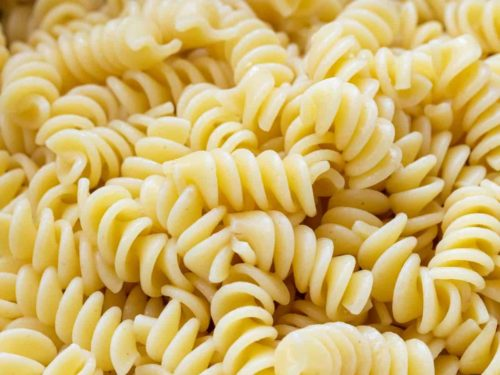

Plain Pasta Recipie

Ingrediants
- 2 cups semolina flour
- ½ teaspoon salt
- ¼ teaspoon baking powder
- ½ cup warm water
- 1 tablespoon butter
Steps
- Mix together flour, salt baking powder.
- Add warm water and butter
- knead dough until stiff
- Let rest a few minutes
- Roll into a ball and quarter
- Using 1/4 of the ball at a time roll out to 1/8 or 1/16 inch thick
- Cut into desired shapes
- Let dry for 1 to 3 hours on flat surface
- Cook as you would pasta